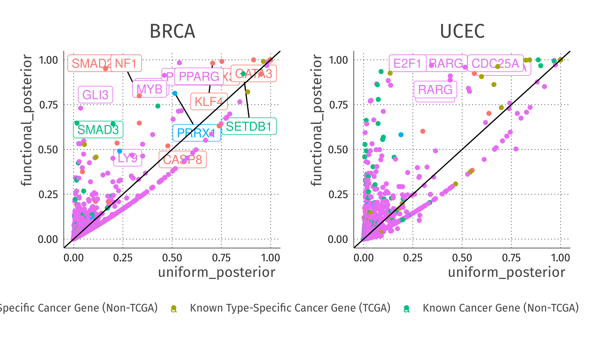

Functional Enrichment by Expectation Maximization
Table of Contents
Introduction
When interpreting the results of a genome-scale genetic association study, be it a GWAS, a whole exome sequencing study, or a whole genome sequencing study, there are two questions that are of interest:
- which genes are associated with the trait of interest, and 2) what are the common properties of the genes that contribute to disease risk. The answer to one of these questions can inform the other.
Obviously, identifying a set of properties common to causal genes is made much easier if the set of causal genes is known with certainty. Furthermore, if the set of causal genes is not known, but prior knowledge about the properties of the causal genes is available, that prior knowledge can be incorporated to implicate genes that might otherwise not have been identified due to a lack of statistical power. Prior information can also be used to deprioritize genes that might otherwise be implicated, despite being false positives. Despite the complementarity of these
Method
Model
Suppose we have gathered genetic data for a set of individuals to identify which genes are causally related to a disease or trait of interest. For each gene \(g \in \{1 \dots G\}\), let the indicator variable \(z_g=1\) indicate that gene \(g\) is causaully related to our trait or disease of interest. We can summarise the evidence for and against our hypothesis that \(z_g=1\) using a bayes factor:
\[B_g=\frac{P(x_g|z_g=1)}{P(x_g|z_g=0)}\]
where \(x_g\) is the subset of the aforementioned genetic data corresponding to the $g$th gene.
Suppose further that we know a set of \(F\) functional annotations or properties for each of our \(G\) genes. Let \(\textbf{a}_g\) denote the length \(F\) vector of annotations for gene \(g\), and \(\textbf{A}\) denote the matrix with \(F\) rows and \(G\) columns consisting of \(\textbf{a}_1 ... \textbf{a}_G\) We define the vector \(\boldsymbol{\beta}\) and the function \(\pi(\boldsymbol{\beta},\textbf{a}_g)\) such that:
\[\pi(\boldsymbol{\beta},\textbf{a}_g) = \frac{1}{1+e^{-(\beta_{0}+\sum_{f=1}^F{A_{f,g}\beta_f})}} = P(z_g=1|\textbf{a}_g,\boldsymbol{\beta})\]
We can compute the likelihood of a particular value of \(\boldsymbol{\beta}\) by treating the data from each gene as coming from a two component mixture model (where \(z_g=1\) and where \(z_g=0\)) and marginalizing over the two components
\[ P(\textbf{x}|\boldsymbol{\beta},\textbf{A})=\prod_{g=1}^{G}P(x_g|\boldsymbol{\beta})=\prod_{g=1}^{G}[\pi(\boldsymbol{\beta},\textbf{a}_g) P(x_g|z_g=1)+(1-\pi(\boldsymbol{\beta},\textbf{a}_g))P(x_g|z_g=0)]\]
By factorizing out the term \(\prod_{g=1}^{G} P(x_g|z_g=0)\) which does not depend on \(\boldsymbol{\beta}\), we can express the likelihood for \(\boldsymbol{\beta}\) in terms of \(\textbf{B}\):
\[P(\textbf{x}|\boldsymbol{\beta},\textbf{A}) \propto \prod_{g=1}^{G}[\pi(\boldsymbol{\beta},\textbf{a}_g)B_g+(1-\pi(\boldsymbol{\beta},\textbf{a}_g))]\]
Given a particular value of \(\boldsymbol{\beta}\), and a bayes factor \(B_g\), we arrive at a new posterior probability that \(z_g=1\):
\[P(z_g=1 | B_g, \boldsymbol{\beta},\textbf{a}_g) = \frac{\pi(\boldsymbol{\beta},\textbf{a}_g) B_g}{\pi(\boldsymbol{\beta} , \textbf{a}_g) B_g + 1 - \pi(\boldsymbol{\beta},\textbf{a}_g)}\]
Our goal is both to estimate \(\boldsymbol{\beta}\) for a relevant set of features as well as \(P(Z_g=1|\textbf{a}_g,\boldsymbol{\beta},x_g)\) for each gene. We use a penalized maximum-likelihood approach to estimate \(\boldsymbol{\beta}\), from which we then \(P(Z_g=1|\textbf{a}_g,\boldsymbol{\beta},x_g)\). The number of gene-level features one might include in such a model is very large. It is impossible, from both a computability and interpretability standpoint, to include all conceivable features in the model. A related but distinct issue is that of collinearity. As the number of features in the model increases, the probability that some subset of features will be collinear with one-another increases, which can complicate model-fitting, as \(\beta\) becomes unidentifiable. This is especially important when a binary, hierarchical feature set like the Gene Ontology.To avoid this issue, we employ a multi-stage model fitting procedure. In the first step, all single-feature-plus-intercept models are fit, and a $p$-value is obtained for each model byt comparing to the intercept-only model via the likelihood ratio test.
From this set of single-feature models, all of the nonsignificant (i.e features with Benjamini-Hochberg adjusted $p$-values greater than 0.05) univariate features for each cancer type were removed from the analysis.
Joint Model
Significant features for each cancer type were then combined in a joint model and fit by maximizing the marginalized likelihood, penalized with an elastic-net penalty.
The Limited Memory Broyden-Fletcher-Goldfarb-Shanno algorithm (LM-BFGS) (Byrd et al. 1995) is among the most popular algorithms for unconstrained optimization over scalar, differentiable functions.
One limitation of LM-BFGS, is that the function that is being optimized must be differentiable. Unfortunately, sparsity-inducing $l1$-regularized models of the form
\[f(\boldsymbol{\theta})=p(\boldsymbol{\theta} | \textbf{x}) + C \Vert \boldsymbol{\theta} \Vert_1\] are not differentiable when any of the elements of the parameter vector \(\boldsybmol{\theta}\) are 0. The Orthant-wise limited-memory quasi-Newton method is a variant of LM-BFGS which is designed precisely for fitting $l1$-regularized, sparsity inducing models.
Regularization by (relaxed) elastic-net
Our multivariate fitting procedure consists of two steps. The first emphasizes feature selection, and the second emphasizes shrinkage. In the first step, we minimize the objective function corresponding to the negative of the elastic-net penalized log-likelihood: \[ -\mathcal{L}(\textbf{x}|\boldsymbol{\beta},\textbf{A}) + \lambda\left( \frac{1-\alpha}{2} \sum_{j=2}^F\beta_j^2 + \alpha \sum_{j=2}^F|\beta_j| \right) \]
Where \(\mathcal{L}(\textbf{x}|\boldsymbol{\beta},\textbf{A}) = \sum_{g=1}^{G}[\log\left(\pi(\boldsymbol{\beta},\textbf{a}_g)B_g+(1-\pi(\boldsymbol{\beta},\textbf{a}_g))\right)]\).
The overall level of sparsity in the model is controlled by the parameter \(\lambda\), while the proportion of \(l_1\) vs \(l_2\) penalty is determined by \(\alpha\). As a default, the value of \(\alpha\) is fixed at 0.85, and \(\lambda\) takes on 100 values starting at zero, and ending at \(\lambda_{\text{max}}\), on a log scale. \(\lambda_{\text{max}}\) is defined as the smallest value of \(\lambda\) for which the objective function is minimized, and all coefficients but the intercept are 0 (the intercept term is not subject to the elastic net penalty). The optimal value of \(\lambda\) is chosen using 10-fold cross-validation.
In the second step, features with \(\beta_f=0\) are removed from the analysis, and cross-validation over 100 values of \(\lambda\) occurs again, this time with \(\alpha = 0\), meaning there is no \(l1\) penalty. The motivation for this two-stage procedure comes from the "relaxed" lasso (Hastie, Tibshirani, and Tibshirani 2017), wherein the lasso is used for feature selection, and the model is refit without a lasso penalty.
Removal of highly enriched features
A subset of features were remvoed after the univariate feature-selection stage as they exhibited enrichment estimates in excess of credulity. Features which corresponded to posterior probabilities in excess of 0.3 were recorded and excluded from consideration for inclusion in the joint model (they were however included when calculating the FDR-adjusted p-values for the univariate tests).
Comparison with Fisher's Exact test
In the case of a single binary feature, one can apply a Bayes Factor cutoff to obtain a contingency table and assess the enrichment of the feature using Fisher's Exact test. We compared FGEM with Fisher's exact test, using an FDR cutoff of 0.1, and compared the $p$-values to those obtained from the single-feature, FGEM the likelihood ratio test $p$-values.
Validation against intOGen
IntOGen is a database of cancer driver genes (Gonzalez-Perez et al. 2013). It is populated by an ensemble method that incorporates seven different methods for identifying cancer driver genes. It weights each of the 7 methods according to their ability to predict membership in the The Catalogue of Somatic Mutations in Cancer (COSMIC) Cancer Gene Census (CGC) (Sondka et al. 2018). To validate the FGEM models, we compared the posterior under the functional model to the functional posterior under the uniform model. In every cancer type, validated cancer genes had a higher functional posterior than uniform posterior, while genes that were not previously identified as cancer genes had on average lower functional posterior compared to uniform (see table).
Data
Gene-Level Summary Statistics
A set of Bayes factors from a study of cancer driver genes (Zhao et al. 2019). For each of 20 TCGA tumor types, roughly 20,000 genes were analyzed and the posterior probability that each gene (in each cancer type) was a causal gene was assessed and summarized via Bayes Factor.
Gene-Level Annotations
- Gene Ontology
The "Biological Process" Gene Ontology (The Gene Ontology Consortium 2018) was downloaded from the Bioconductor package
GO.db(Carlson 2020). Of the 10,930 possible biological process gene ontology terms, the 2,198 terms that include 10 or more genes were analyzed, so as to reduce the multiple testing burden.
Software
Our method is distributed as a freely available R package FGEM (Team 2020) .FGEM relies on the SQUAREM package to accelerate EM convergence (Du and Varadhan 2020)
and the hot-path functions are implemented as C++ functions using the RcppEigen (Bates and Eddelbuettel 2013) package.
Results
FGEM identifies biologically relevant gene-level annotations
FGEM integrates multiple gene-level annotations to reprioritize genes

Highly enriched single features
As stated in the Methods section, Features which corresponded to posterior probabilities in excess of 0.3 were excluded from consideration for inclusion in the joint model. One consequence of FGEM's latent variable approach is that it is possible to encounter a scenario analogous to the "separation" problem in logistic regression. In logistic regression, if one (or several) predictors predict an output perfectly, the likelihood for that feature is not maximized at a finite parameter value. Because there is high overlap in the Gene Ontology feature-set, little information is lost by excluding these problematic features.
Discussion
Consequences of the latent variable approach
The latent variable \(z_i\) in the FGEM model is by definition unobserved, One of the most salient features of FGEM as compared to Fisher's Exact test is that FGEM does not binarize data into significant vs insignificant. For a particular gene set in a particular dataset, the enrichment of Fisher's exact test is determined by the cardinality of the entries in the 2 by 2 contingency table. In the case of Bayes factors, genes for which the evidence is in favor of the null hypothesis is treated identically to genes for which the evidence is in favor of the alternative hypothesis, but slightly below the significance cutoff.